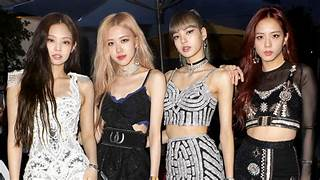

K-PAGE

BLACKPINK
2016-presente
Blackpink es un grupo musical femenino surcoreano formado por YG Entertainment. Está conformado por cuatro miembros: Jisoo, Jennie, Rosé y Lisa. Blackpink es el primer grupo de k-pop femenino con la posición más alta en Billboard Hot 100 con su sencillo «Ice Cream», canción realizada en colaboración con Selena Gomez, en la decimotercera posición, y en la lista Billboard 200, en el segundo puesto con su primer álbum larga duración The Album. Son el primer y único grupo femenino de K-Pop en ingresar y encabezar las listas de artistas emergentes de Billboard. También son el primer grupo femenino de k-pop en tener cuatro canciones en la lista World Digital Song Sales. Al mismo tiempo, «Ddu-Du Ddu-Du», tras su lanzamiento, rompió el récord existente como el vídeo musical coreano más visto en YouTube dentro de las primeras 24 horas. El 11 de noviembre de 2019, este mismo alcanzó las mil millones de reproducciones, transformando a Blackpink en el primer grupo de k-pop en lograrlo.
Historia-Predebut
El 5 de junio de 2016, YG Entertainment comenzó a revelar imágenes de su nuevo grupo de chicas (anteriormente «PinkPunk») para generar expectativa en el público. Cada semana se revelaba una integrante, empezando por Jennie, quien colaboró anteriormente con artistas de su misma agencia. El 8 de junio, se reveló a Lisa, la chica misteriosa que sorprendió a muchos con un vídeo de YouTube subido en el canal de la propia agencia. El 15 de junio, la foto de Jisoo fue revelada, la miembro mayor del grupo, ya conocida por el público debido a las revistas ilustradas para diversas marcas y apariciones en vídeos musicales, además de un breve papel en el drama coreano The Producers.El 22 de junio, Rosé se reveló como el último miembro. Fue previamente conocida por su participación en la canción «Without You» de G-Dragon en 2012, llamando la atención por su voz.Por último, el 29 de junio, YG reveló imágenes con el grupo completo, anteriormente reveladas individualmente, lo que confirma la formación del grupo: Jennie, Jisoo, Lisa, Rosé. La agencia confirmó fecha de debut del grupo para la última semana de julio, sin embargo, debido a los retrasos del grupo hizo su debut el 8 de agosto.
2016: Debut con Square One y Square Two
Debutaron con el sencillo Square One el 8 de agosto de 2016. La primera canción, titulada «Whistle», fue una «pista hip-hop minimal»y fue producida por Teddy Park y Future Bounce, y escrita por Teddy Park y Bekuh BOOM. La segunda canción titulada «Boombayah», fue producida por Teddy Park y coescrita con Bekuh BOOM.16 Su vídeo musical fue dirigido por Seo Hyun-seung. Los sencillos debut de BLACKPINK alcanzaron el número uno en el chart de Billboard World Digital Songs. Fueron el grupo más rápido en hacerlo, y el tercer artista coreano en ocupar las dos primeras posiciones después de PSY y Big Bang.«Whistle» encabezó los charts digitales, de descarga, de streaming y móviles de Gaon en agosto de 2016.También alcanzaron el número uno en las listas semanales, de popularidad, de vídeo musical y de música de K-pop del sitio de música más popular de China QQ Music. La primera aparición del grupo en televisión fue emitida el 14 de agosto de 2016 en el programa Inkigayo de SBS. Su victoria en el programa batió el récord para un grupo femenino que tarda el menor tiempo en ganar en un programa de música tras su debut (14 días). Terminaron sus promociones para Square One el 11 de septiembre de 2016 con otra victoria en Inkigayo. Blackpink lanzó su segundo álbum sencillo, Square Two, con las pistas principales «Playing with Fire» y «Stay» el 31 de octubre de 2016. Las canciones fueron producidas por Teddy junto a R.Tee y Seo Won Jin. Realizaron su escenario de regreso en Inkigayo de SBS el 6 de noviembre y en M! Countdown de Mnet el 10 de noviembre de 2016. «Playing With Fire» fue su segundo sencillo en llegar al número uno en el chart de Billboard World Digital Songs.
2017: «As If It's Your Last» y debut en Japón
El 16 de mayo de 2017, se anunció que Blackpink debutaría en Japón en el verano de 2017, con un gran debut el 20 de julio en el Nippon Budokan en Tokio y con el lanzamiento de un miniálbum el 9 de agosto.Un fragmento del vídeo musical para la versión japonesa de «Boombayah» fue emitido en la televisión en Japón el 17 de mayo. El 22 de junio, Blackpink publicó un nuevo sencillo digital titulado «As If It's Your Last». La canción fue descrita como «una mezcla de house, reggae y moombahton», algo diferente a sus anteriores canciones. Tan solo diecisiete horas después de lanzamiento, el vídeo musical de «As If It's Your Last» alcanzó más de once millones de reproducciones en YouTube, convirtiéndose en el vídeo más rápido en exceder las diez millones de reproducciones por un grupo coreano, rompiendo el récord previamente alcanzado por el grupo BTS con su sencillo «Not Today», con diez millones de reproducciones en veintiún horas. Además, el vídeo musical se convirtió en el segundo vídeo más visto en 24 horas por un acto coreano, con más de trece millones de reproducciones, solo siendo superado por «Gentleman» de PSY. El vídeo musical también alcanzó el millón de likes antes de las 24 horas, por lo que tiene el récord del vídeo musical con más «me gusta» en dicho período por un grupo femenino, superando a Little Mix, quienes previamente poseían este récord con 600.000 likes. El 13 de julio, Blackpink publicó la versión japonesa de «Boombayah». Además, confirmaron que el 30 de agosto lanzarían su miniálbum debut en japonés, el cual incluiría las versiones de «Boombayah», «Whistle», «Playing with Fire», «Stay» y «As If It's Your Last» en japonés. Durante los siguientes días publicaron las versiones en japonés de dichas canciones. El 30 de agosto, el grupo finalmente hizo su debut japonés con el lanzamiento del EP, Blackpink. El álbum debutó en el primer lugar del Oricon Album Chart con 39 000 copias físicas vendidas en su primera semana de lanzamiento, ubicando al grupo como el tercer artista musical en ingresar a la lista con un lanzamiento debut.
2018: Square Up, gira por Japón, «Solo» de Jennie y primer tour mundial
En 2018, fue anunciado que el grupo regresaría con una reedición titulada Re:Blackpink.El EP fue lanzado el 28 de marzo y contiene todas las canciones previamente lanzadas en japonés y coreano. El 15 de junio, el grupo lanzó su primer EP titulado Square Up.El sencillo «Ddu-Du Ddu-Du» debutó en el número 17 de la Official Trending Chart del Reino Unido, convirtiéndose en el primer grupo K-pop femenino en entrar en la lista desde su lanzamiento en 2016. El sencillo también debutó en los Billboard Hot 100 como la canción de mayor éxito de todos los tiempos por un grupo de K-pop femenino, ingresando a la lista en el puesto N.º 55 con 12,4 millones de reproducciones en EE. UU. y 7.000 descargas vendidas en la semana de seguimiento, que terminó el 21 de junio de 2018, según Nielsen Music.El único otro grupo de K-pop femenino con un éxito en los Hot 100 era Wonder Girls con «Nobody» en 2009, canción que debutó y alcanzó su punto máximo en el puesto N.º 76. «Ddu-Du Ddu-Du» también debutó en el puesto N.º 39 de la lista musical Streaming Songs, donde Blackpink se convirtió en el primer grupo femenino de K-pop en conseguir un título. El sencillo también lideró la lista de Billboard, convirtiéndolo en su cuarto primer puesto del grupo en la lista de éxitos. Square Up también trajo al grupo su primera entrada y la más alta puntuación hasta la fecha por un grupo de pop femenino de K-pop en los Billboard 200, debutando en el puesto N.º 40 con 14.000 unidades equivalentes al álbum, superando el récord del grupo 2NE1 en 2014 con su último álbum Crush, que llegó al puesto N.º 61. En Corea del Sur, Square Up debutó en el primer lugar de la lista de álbumes de Gaon. El sencillo «Ddu-Du Ddu-Du» alcanzó el número uno de las listas de éxitos de Digital, Download, Streaming y Mobile de Gaon en su segunda semana, mientras que su otra canción, «Forever Young», también estuvo entre los cinco primeros puestos. El conteo oficial de YouTube asegura que el vídeo musical de «Ddu-Du Ddu-Du» obtuvo un total de 36,2 millones de reproducciones en las primeras 24 horas después de su lanzamiento y se convirtió en el vídeo en línea más visto en las primeras 24 horas por un acto coreano y en el segundo vídeo musical más visto de todos los tiempos en 24 horas, superando a «Gentleman» de Psy y solo detrás de «Look What You Made Me Do» de Taylor Swift. El 7 de julio, se anunció la última parada de su gira Blackpink Arena Tour 2018, primer tour del grupo, que comenzaría en Osaka el 24 y 25 de julio,para finalizar el 24 de diciembre en el Kyocera Dome Osaka como regalo de Navidad para los fanáticos. La gira contó con más de 120.000 asistentes, entre las ocho presentaciones, y convirtió al grupo en el primer girl group en actuar en un concierto en solitario en el famoso Domo de Japón, tras haber debutado tan solo un año y cuatro meses antes. El 12 de septiembre, se anunció que el grupo celebraría su primer concierto en Seúl titulado Blackpink 2018 Tour (In Your Area) Seoul x BC Card en el Olympic Gymnastics Arena. El concierto dio lugar a la gira mundial Blackpink World Tour (In Your Area), que continuó hasta 2019 y principios de 2020 en América del Norte, Europa, Oceanía y Japón. La gira finalmente se convirtió, hasta hoy, en la gira más taquillera de un grupo femenino surcoreano, tras 36 presentaciones y con casi 500.000 asistentes en total. El 19 de octubre, la cantante inglesa Dua Lipa lanzó «Kiss and Make Up» junto a Blackpink, una nueva pista para la edición reeditada de su álbum debut homónimo. La canción debutó en el número 93 en el Billboard Hot 100, siendo la segunda entrada de Blackpink en esta lista y convirtiéndola en el único grupo femenino surcoreano en tener, al menos, dos entradas en la lista. La canción también se convirtió en su segunda entrada en el UK Singles Chart del Reino Unido, alcanzando el puesto N.º 36 y siendo su primera entrada entre las 40 primeras posiciones. Fueron el primer grupo femenino coreano y el tercer acto coreano en general en llegar al top 40. En octubre de 2018, el grupo firmó con Interscope Records en una asociación global con YG Entertainment, siendo representadas por Interscope y Universal Music Group fuera de Asia. En noviembre de 2018, Blackpink anunció fechas de gira adicionales para su tour mundial, que cubrió trece fechas en Asia, de enero a marzo de 2019. Jennie debutó con su sencillo, «Solo», en el concierto en Seúl el 11 de noviembre. Tanto la canción como su vídeo musical oficial fueron lanzados al día siguiente. Luego fue lanzado el primer álbum de estudio japonés del grupo, Blackpink In Your Area, que estuvo disponible digitalmente el 23 de noviembre y físicamente el 5 de diciembre.59 El álbum incluía versiones japonesas de todos sus lanzamientos anteriores y debutó en el número 9 en la lista de álbumes de Oricon, vendiendo casi 13.000 copias durante su primera semana.
2019: Debut en los Estados Unidos, Kill This Love y éxito en Coachella
Blackpink hizo su debut en Estados Unidos en el Grammy Artist Showcase 2019 de Universal Music Group, un evento solo por invitación en el ROW en el centro de Los Ángeles el 9 de febrero de 2019. El grupo apareció en varios programas de televisión estadounidenses después de su presentación debut, incluyendo The Late Show with Stephen Colbert y Good Morning America.En marzo del mismo año, se convirtieron en el primer grupo femenino de k-pop en aparecer en la portada de la revista Billboard. Su segundo miniálbum, Kill This Love, encabezado por un sencillo homónimo, fue lanzado el 5 de abril de 2019.El álbum debutó en el número 24 en el Billboard 200, mientras que el sencillo principal alcanzó el número 41 en el Billboard Hot 100, convirtiéndose en los lanzamientos con las listas más altas de una actuación femenina coreana en las dos listas principales de Billboard. «Kill This Love» fue incluida en la lista de las 100 mejores canciones de 2019. Además, su videoclip fue el más visto en YouTube en sus primeras 24 horas, con 56,7 millones de visualizaciones. De forma paralela, la canción «Forever Young», lanzada como un lado B de su anterior EP Square Up (2018), superó las 2.5 millones de descargas en diciembre de 2019, lo que la convirtió en la quinta canción del grupo en general y la segunda en lograr una certificación de Platino por descargas de la Asociación de Contenido Musical de Corea (KMCA), después de «Ddu-Du Ddu-Du». El grupo se presentó en el Festival de Música y Artes de Coachella Valley 2019 el 12 y 19 de abril, lo que los convirtió en el primer grupo femenino de k-pop en hacerlo. El 16 de octubre de 2019, se lanzó al mercado japonés una versión japonesa de «Kill This Love», alcanzando el puesto 17 en la lista de álbumes de Oricon. El grupo se embarcó a Japón para una variedad de actividades promocionales, incluyendo apariciones en programas de televisión de música japonesa, como Music Station de TV Asahi y Love Music de Fuji TV.
2020: Colaboraciones, The Album y primer documental
El 22 de abril, y tras un hiatus de casi un año, se confirmó que el grupo estaría presente en el sexto álbum de estudio de la cantante norteamericana Lady Gaga titulado Chromatica, con la pista titulada «Sour Candy», que fue lanzada como sencillo promocional el 28 de mayo de 2020. En Billboard Hot 100, la canción debutó en el número 33, dándole a Gaga su éxito número 25 en el top 40 y a Blackpink el primero, convirtiéndose en su canción con las listas más altas en los Estados Unidos hasta la fecha, así como la canción con las listas más altas de un grupo femenino de k-pop. En Australia, la canción debutó en el número 8, convirtiéndose en el éxito más alto de Blackpink en ese país.74 También se convirtió en su primer sencillo entre los veinte primeros en el Reino Unido, debutando en el número 17. El 18 de mayo, YG Entertainment anunció que el grupo lanzaría un sencillo de prelanzamiento en junio, seguido de un lanzamiento de un sencillo adicional entre julio y agosto, para promocionar su primer álbum coreano de larga duración en septiembre. El 2 de junio, YG Entertainment confirmó que después del lanzamiento del primer álbum de larga duración del grupo, las miembros Rosé, Lisa y Jisoo lanzarían sus proyectos individuales, con el lanzamiento del álbum en solitario de Rosé en primer lugar. Su primer sencillo titulado «How You Like That» debutó en el número 12 en la lista digital de Gaon, con solo 1 día y 16 horas de seguimiento y alcanzó su punto máximo en el número uno en las listas digitales, de descarga y de transmisión de Gaon en su segunda semana. La canción se convirtió en la quinta pista de Blackpink en aparecer en el Billboard Hot 100, alcanzando el puesto N.º 33. Tras casi un mes de promoción y ventas, la canción consiguió, entre otros reconocimientos, batir cinco Record Guinness en YouTube,80 ganar 12 Perfect All-Kill (PAK) de la música coreana, un disco de diamante por casi 2.000.000 de reproducciones certificadas en China y alcanzar el primer lugar en iTunes en más de 60 países. En medio de los preparativos del regreso del grupo, YG Entertainment lanzó un prólogo de su nuevo reality show titulado 24/365 with Blackpink, el 13 de junio, antes de su lanzamiento en YouTube. El programa documenta su regreso en 2020 junto con compartir su vida diaria a través del formato vlogs. El 23 de julio, YG Entertainment anunció que el 28 de agosto lanzaría su nuevo sencillo, «Ice Cream», en colaboración con la cantautora estadounidense Selena Gomez. El 28 de julio, la banda anunció que su álbum de estudio, titulado The Album, se lanzaría el 2 de octubre de 2020. El 30 de agosto de 2020, Blackpink se convirtió en el primer grupo femenino de k-pop en ganar un premio en los MTV Video Music Awards, obteniendo el galardón en la categoría de la Canción del Verano por «How You Like That». Blackpink lanzó su primer álbum de estudio coreano, The Album, el 2 de octubre de 2020, con «Lovesick Girls» como su tercer y principal sencillo. Antes del estreno exclusivo de su vídeo musical, Blackpink apareció en el nuevo programa musical original de Youtube, Released, siendo su primer artista destacado, que incluyó momentos de «acceso sin filtros» del grupo. The Album alcanzó el puesto número 2 en el Billboard 200 y en la lista UK Albums Chart del Reino Unido, lo que convirtió a Blackpink en el acto femenino coreano con las posiciones más altas en cada una de dichas listas. El álbum también estableció un récord de ventas de álbumes en la primera semana para un grupo femenino de Corea, con 590.000 copias vendidas en solo un día después del lanzamiento del álbum físico. Posteriormente se convirtió en el primer grupo femenino de k-pop en alcanzar la certificación Million Seller con The Album, vendiendo aproximadamente 1,2 millones de copias en menos de un mes después de su lanzamiento.
2015-2016: Hiatus del grupo, actividades en solitario, salida de Minzy y separación
En 2015 se vio a las miembros explorar empresas fuera del grupo. Dara, a partir de principios de 2015, reestableció su carrera como actriz a lo largo del año a través de dramas web como Dr.Ian, el exitoso We Broke Up, y protagonizó la comedia romántica Missing You junto a Kim Jeong Hoon. Siendo la bailarina del grupo, Minzy abrió una escuela de baile con el nombre de «Academia de Danza del Milenio» durante el silencio promocional.1 CL se embarcó en sus aspiraciones de carrera en solitario en Estados Unidos y lanzó «HELLO BITCHES» el 21 de noviembre como un teaser para su posterior lanzamiento EP titulado Lifted. La fecha para el miniálbum no ha sido anunciada. La única actividad del grupo en 2015 fue una actuación sorpresa en los premios 2015 Mnet Asian Music Awards en Hong Kong. Después de la actuación de CL de su sencillo «The Baddest Female»" y el recién estrenado «HELLO BI+CHES», todas las miembros se reunieron para tocar sus exitosas canciones «Fire» y «I Am the Best». La actuación es ahora como la más vista de los MAMA. La sorprendente aparición en MAMA, fue catalogada como una de las mejores actuaciones de 2015 por Fuse. A pesar de no haber hecho una reaparición, 2NE1 no obstante fue el 16.º grupo de K-pop más apreciado en Tumblr para 2015. Además, tanto 2NE1 como CL recibieron un asentimiento de Spotify en su campaña «Year in Music» de Twitter para cada uno logrando más de un millón de oyentes. También ganaron el premio 2016 Korea First Brand Grand Prize de China por los Top 10 K-Stars más anticipados de 2016. El 5 de abril de 2016, YG Entertainment confirmó que Minzy estaba abandonando oficialmente el grupo. El contrato de 2NE1 expiró el 5 de mayo, y Minzy fue el único miembro que no volvió a firmar. El 25 de noviembre de 2016, YG Entertainment anunció la separación del grupo. YG también reveló que los antiguos miembros de CL y Sandara firmaron un contrato en solitario,pero Park Bom no firmó de vuelta con YG Enterteinment. En abril del 2022 el grupo volvió a reunirse en el escenario del festival de música Coachella para interpretar su éxito "I am the best".
Esta información fue extraída de distintos sitios de Internet.
Integrantes:
Bom
Vocalista principal, bailarina y visual
Dara
Rapera, visual principal, bailarina y vocalista